REPAIR TIPS 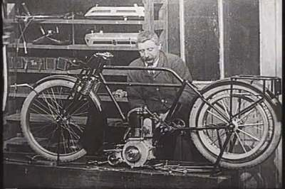
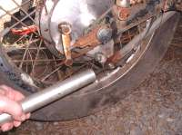 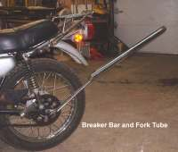 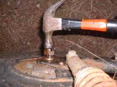 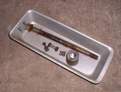 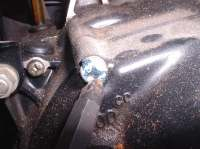 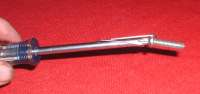 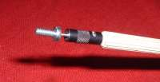 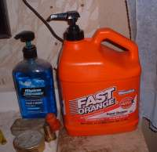 If you find you have run out just take a squirt of liquid soap onto your hands. Most any kind will do. Rub it all over your hands until they are dry. Now just work normally. When you go to wash your hands, the oil and dirt will come off much easier.
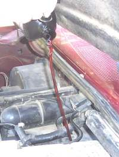 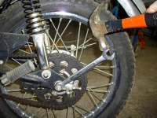 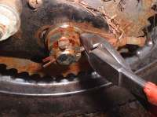 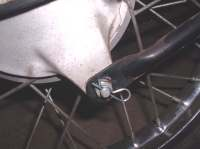 Point the round, closed end to the front of the bike. If you are tightening a castle nut and reach the correct torque but the grooves in the castle nut do not line up with the hole in the shaft continue to tighten till the grooves and hole line up. Do not loosen the castle nut to make the grooves and hole line up.
Put that puppy in, with the round end in the direction of travel, and just bend one end, of the two, at a forty-five degree angle. You can now remove it, at a future time, and reuse it if you want to. It will not come out on it's own.
Back in 1973 I was a paratrooper with the 82nd Airborne. When we jumped from an airplane we would clip the static line from our parachute to a cable in the airplane and put a small pin in the clip to keep it from unclipping itself. The Jump Master would tell us to only bend the pin down at a forty-five degree angle so it would be easy to remove from the clip after the jump. Guess what? We never lost anyone from a pin coming out of the clip. We lost a bunch of guys from other stuff. Parachutes don't always open right, you know. However, we never lost anyone from a pin coming out. If a forty-five degree bend is good enough for the paratroops, it is good enough for me.
As always, if you want to be a straight leg and tie the pin in a knot, go for it dude... or dudette as the case may be.
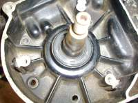 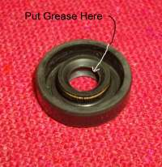 Bearings are actually quite delicate. To install them you need to be careful. Install bearings with the manufacturers name and part numbers facing out. By out I mean the name and sizing numbers should be visible from the side the bearing is installed from.
The balls in the bearing are held in position by small steel cage. If you drive the bearing in or out and deform this cage, it will pull the balls out of position and ruin the bearing. If you are putting in a new bearing you can drive the old bearing out and not worry about this. However, if the bearing is going to be reused you need to be very careful. Heat (with a heat gun) will be very helpful here to expand whatever you are putting the bearing into and cold (put it in the freezer) to shrink whatever you are putting through the center of the bearing.
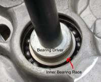 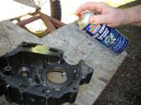 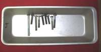 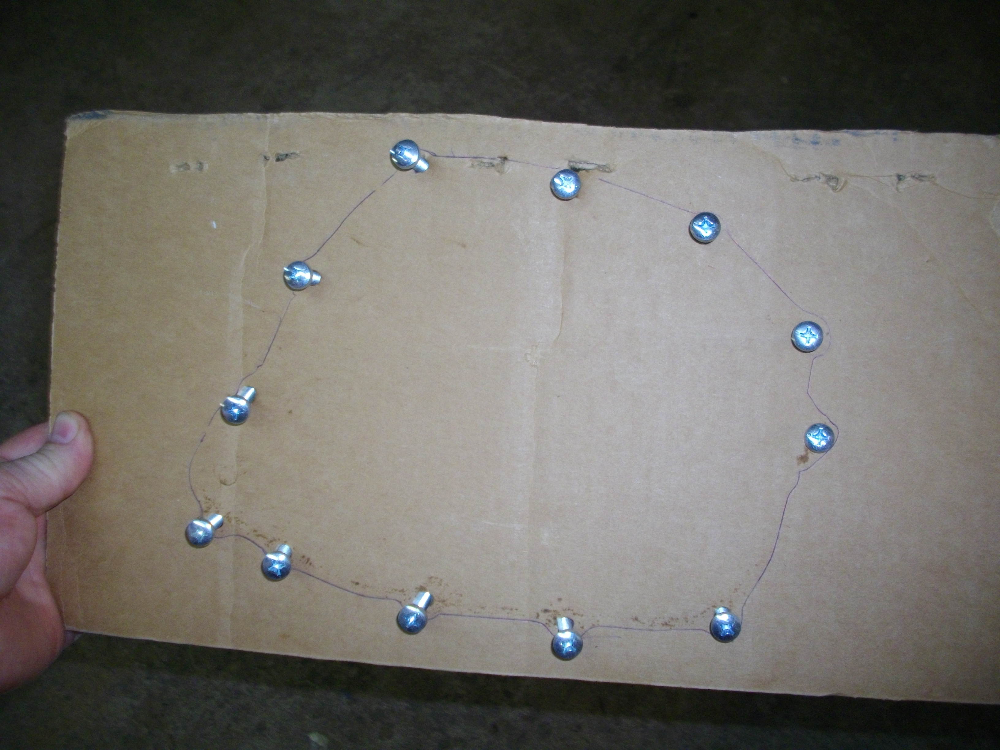 Two. Take a piece of cardboard, draw a rough picture of the holes in the cover, and then punch each hole with a Phillips Screwdriver. Then place the right screws in the right holes.
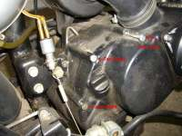 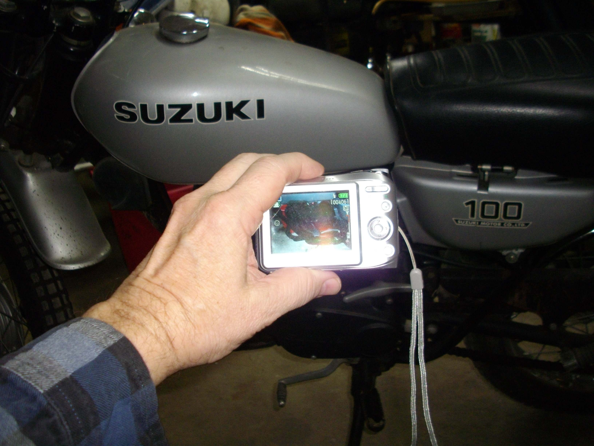 Get a Digital Camera and take a lot of pictures of the Motorcycle as you disassemble it. Then you don't have to remember how all the little parts go back together. How and in what order do the clutch plates go back in. Electrical wire routing. Control cable routing. The list is endless. This is especially handy if, for any number of reasons, you can't get back to reassemble the engine in the next couple of days, weeks, months or maybe even years.
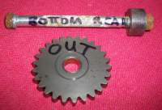 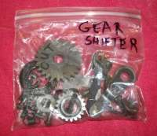 This keeps all those oily parts separate, safe from rust and dust. All the screws, washers, shims and gears with their proper assemblies. Keeps the storage box clean too. You can even use a Felt Tip Marker to write on the bag what is in the bag. When you come back in the future, all will be ready and in good condition for you to finish the job.
All this marking and bagging brings us to perhaps the most important tip of all. The Bible tells us in
First Thessalonians 5:21:

¶Sometimes. you are working on a job and that nut or bolt is in real tight. It's a real pain to go find a "cheater" so what's a biker to do? Take an extra combination wrench of similar size, hook the enclosed end of one to the open end of the other and Presto-Chango you have a "Cheater".
Other times you need a longer "Cheater" so a piece of pipe can be used.
 You can use almost anything as a "Cheater. One of my favorites is an old fork tube. Another favorite is an old aluminum baseball bat.
You can use almost anything as a "Cheater. One of my favorites is an old fork tube. Another favorite is an old aluminum baseball bat.
 As you are tapping away you might find you need to tap that axle in all the way and out the other side. To do this you need a piece of brass rod of the appropriate size. One end on the axle end and the other end you hammer. Brass is softer then steel so there is less chance of deforming the threads. This works great as long as you center the brass rod after each hammer blow. As you can see, the brass rod can be slightly bent and still work. Yes, you are right. I need a new piece of brass rod.
As you are tapping away you might find you need to tap that axle in all the way and out the other side. To do this you need a piece of brass rod of the appropriate size. One end on the axle end and the other end you hammer. Brass is softer then steel so there is less chance of deforming the threads. This works great as long as you center the brass rod after each hammer blow. As you can see, the brass rod can be slightly bent and still work. Yes, you are right. I need a new piece of brass rod.
I use Parts Trays all the time. You can put all the bolts and nuts from each group of parts you disassemble. Much better then piling them on the floor and then kicking them all over the place. I use old ice cube trays. You can get them at a second hand Store. Other types of pans work good too. Try it, you'll like it.
If the screw head is rounded out you can put some valve grinding compound in it and that will help the screw driver bit to bite the screw head better. if you have some coarse grinding powder and add it to some oil you can make your own.
Sometimes it seems they put the oil fill hole in a position that forces you to spill oil on the engine. Well, just put a piece of wire or an oil dipstick from a car into the fill hole and pour that oil in. Pour it slowly, keeping it as straight up as possible, and it will go right in. Takes a bit of skill to learn but when you do, it is a very slick trick indeed.


Apparently the way they make external and internal circlips produces a rounded or chamfered edge on one side and a sharp edge on the other. Make sure the sharp edge is away from the line of the thrust load.
For rusted Cotter-Pin removal, straighten the pin ends and the use set of wire cutters to lever the pin out. Just don't squeeze the wire cutters too tight. If you do you could cut the round end off. If that happens, just lever the two pin pieces out from the other side.
 Now the "Powers That Be" say to bend that Cotter Pin all around and tightly to the Castle Nut. Their reasoning is that a rock could fly up, hit the Cotter Pin and knock it off the Castle nut. Really? You really believe that? I have been around Cotter Pins for Fifty years and I have never seen that or run across anyone who has had it happen to them. I have run across lots and lots of Cotter Pins that were most difficult to remove because some idiot tied them in a square knot.
Now the "Powers That Be" say to bend that Cotter Pin all around and tightly to the Castle Nut. Their reasoning is that a rock could fly up, hit the Cotter Pin and knock it off the Castle nut. Really? You really believe that? I have been around Cotter Pins for Fifty years and I have never seen that or run across anyone who has had it happen to them. I have run across lots and lots of Cotter Pins that were most difficult to remove because some idiot tied them in a square knot.
Always install Seals with the markings on the Seal pointing out or away from the item or area you want to seal. It is also a good idea to pack the seal cavity with grease.
Bad Way to
Drive Bearing
Drive the Bearing
In or Out Right
Good Way to
Drive Bearing
Prove all things; hold fast that which is good.
To me that means slow down and look at what you are doing. Prove to yourself that what you are doing is good. What does that mean? In motorcycle repair doing good means that when you repair your motorcycle it runs good. Leaping in and chewing that repair job up is only good if the repair is good and the bike runs good. Proving all things is good to apply to your shop manual and everything else that you do.
I have had a shop manual supply me with wrong information at least four or five times over the years. Twice I have found the shop manual to be wrong on engine valve timing. If I had used the shop manuals instructions it would have timed the valves wrong and bent them. I proved the instructions by setting the number one cylinder at Top-Dead-Center of the compression stroke and then looking to see if the timing marks lined up. They did. When I then tried to set them the way the shop manual said to, the marks DID NOT line up correctly.
Another time the clearances on the piston were wrong. Another time the instructions for the proper timing of the engine balancer were split in two and the two parts separated by fifty pages of shop manual making them almost imposable to figure out. This was a factory manual too. If I had not slowed down and proved to myself where those balancing marks should be BEFORE I pulled the crankshaft and gears out, the finished job would have been a very shaky proposition.
Still another time I notice that there were NO timing marks on the cams so I marked them. I came to find the cams were from some out of business cam grinder. Bad news if I had not put my own marks on them, but I did so we are good. Slow down and look at what you are doing.
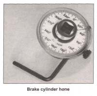
is faithful also in much:
and he that is unjust in the least
is unjust also in much."
Way too many years ago a young man pushes his Harley up to my shop door. Seems the head gasket on one of the cylinders is blown. He, and his father who was following him, were headed for the coast and hundreds of miles from home. He asks if he can take it apart on the cement slab out in front of my shop. He seemed like a nice guy. It's summer and hot out so I tell him to do it inside the shop. I had the room, no sense him getting heatstroke. He gets it apart and decides to do both head gaskets, just to be safe.
When he took it apart I told him to mark everything, like the push rods, so everything can go back in the same place. He did not see much reason for that but to humor me he did so. Now this Harley had a new (at the time) Evolution engine. I did not have a shop manual for it or the head gaskets but we found a set at a Harley dealer about 50 miles away. So he and his father went to get them and would come back the next day. While he was there the dealer tells him all four pushrods are of different lengths and then he saw the wisdom of marking them.
The next day he starts to reassemble the bike and everything goes together good. However, when he tries to start it, no go. He checks and it has no compression. Oh no! He starts to take it back apart so I stop him. I tell him to sit down and relax a while. He has places to go and things to do but he takes my advice. About an hour later the bike starts right up. It had hydraulic tappets. They got pumped up during the assembly and it took them a while to bleed down to the right clearance, which in this case was zero. Remember...
Prove all things; hold fast that which is good.

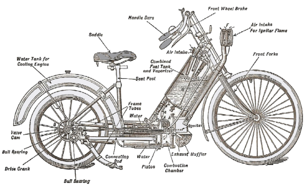 |
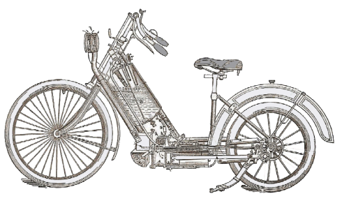 |
Copyright © 1999-2016 dansmc.com. All rights reserved.